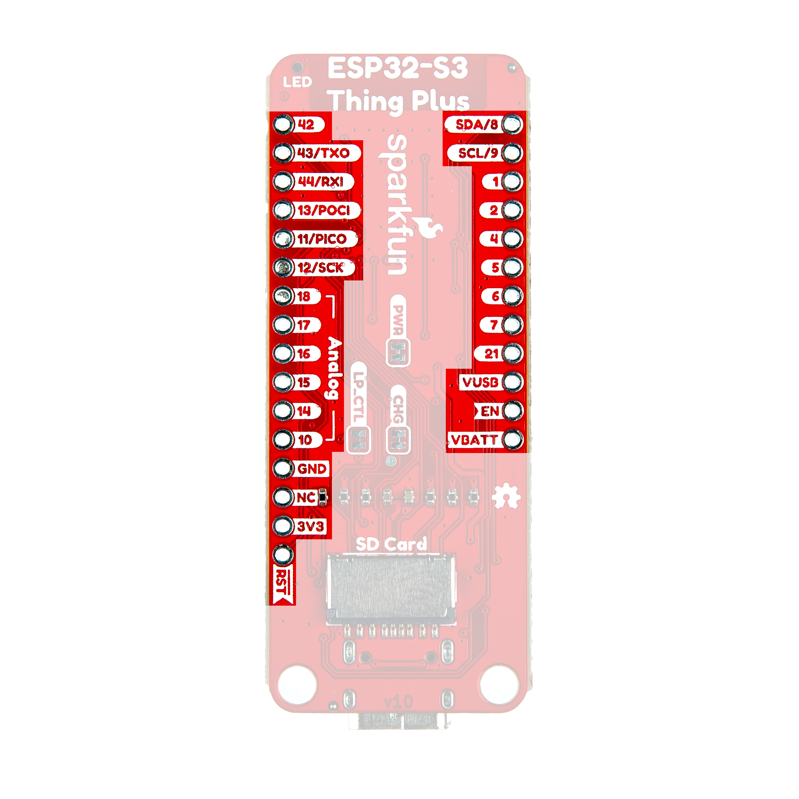

Wiring & flash instructions
Wire each panel signal to the listed ESP32 GPIO. The firmware's pin assignments for this board are baked in — don't substitute "conventional" HUB75 pin orderings or colors will be wrong. Pin 8 (E) on the panel's IDC is unused on a 1/16-scan panel; leave it disconnected.
| HUB75 signal | IDC pin # | ESP32 GPIO |
|---|---|---|
| R1 | 1 | GPIO 1 |
| G1 | 2 | GPIO 4 |
| B1 | 3 | GPIO 2 |
| GND | 4 | any GND pin on the board |
| R2 | 5 | GPIO 5 |
| G2 | 6 | GPIO 7 |
| B2 | 7 | GPIO 6 |
| E | 8 | not connected (1/16-scan panel) |
| A | 9 | GPIO 10 |
| B | 10 | GPIO 14 |
| C | 11 | GPIO 15 |
| D | 12 | GPIO 16 |
| CLK | 13 | GPIO 17 |
| LAT | 14 | GPIO 18 |
| OE | 15 | GPIO 21 |
| GND | 16 | any GND pin on the board |

Plug the ESP32-S3 into your computer with a USB-C cable, then click below. Chrome, Edge, or another Chromium-based browser is required.
PORT=/dev/cu.usbmodem* # tab-complete to the real path
stty -f $PORT 115200 cs8 -cstopb -parenb raw
echo '{"state":"working","subagent_count":2}' > $PORT
At chip reset, OE (GPIO 21) is briefly high-impedance before the
firmware takes over — this can cause a quick visual flash on the panel
at boot. To suppress it, solder a 10 kΩ resistor between OE and 3V3.
The firmware's early-OE-high block in app_main() trims the
window further but a hardware pull-up is the clean fix.